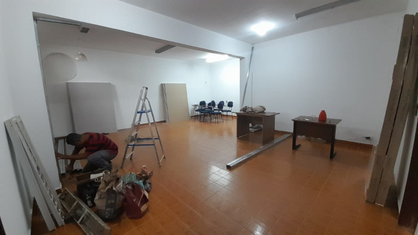
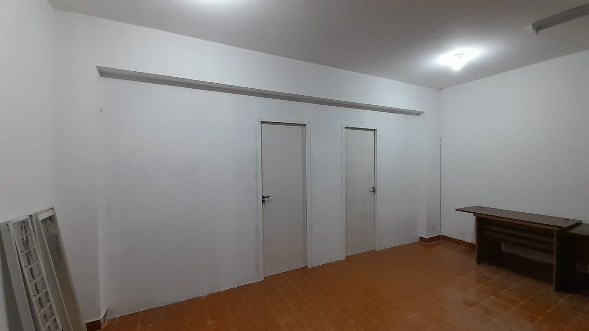
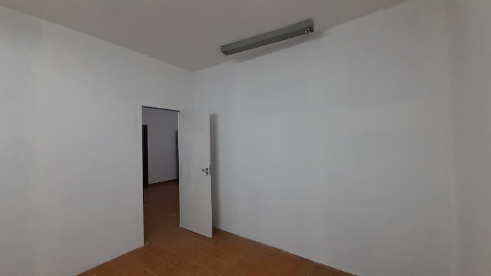

Rebaixamento de teto
Tipos de Sancas
- Sanca aberta. Esta é uma das opções mais simples e populares.
- Sanca Fechada.
- Sanca invertida.
- Sanca iluminada.
- Sanca com ilha iluminada.
Veja alguns exemplos de nossos serviços
Sanca Aberta com Parede 3D
Sanca Aberta
Sanca Aberta com Parede 3D
Veja um exemplo de Sanca com ilha iluminada
divisórias de Drywall
Antes
Depois

